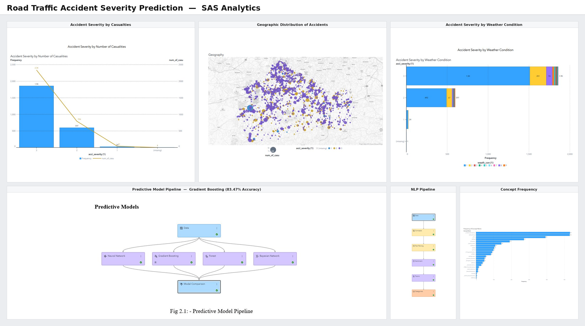
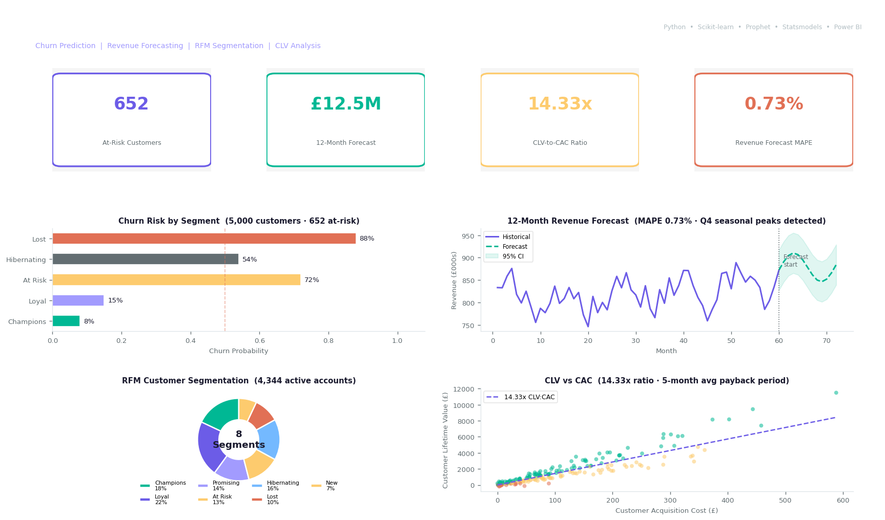
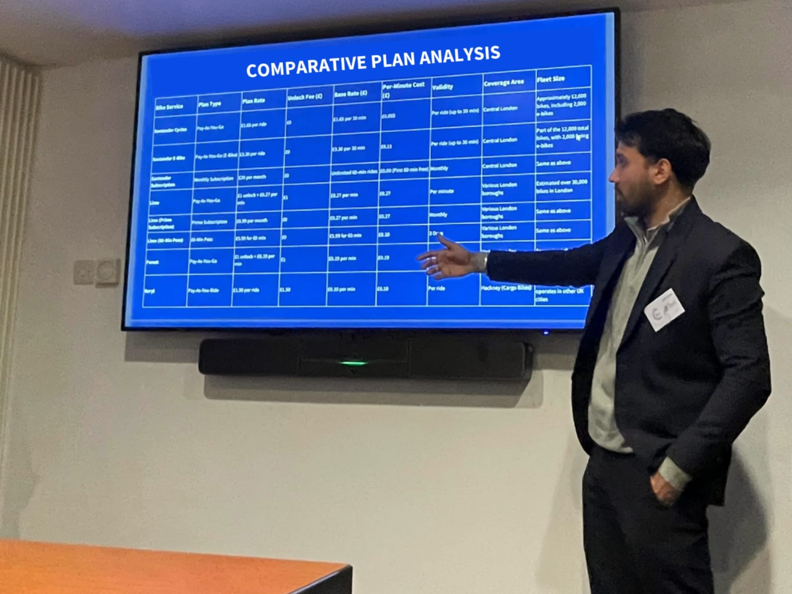
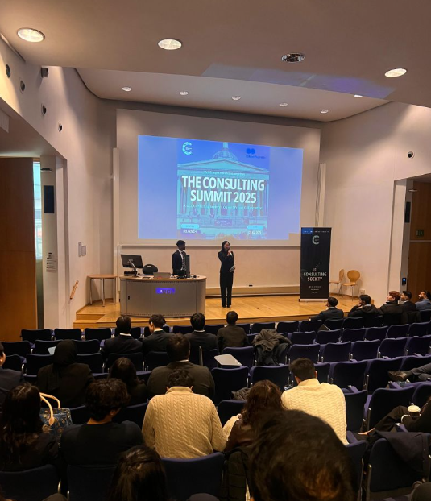
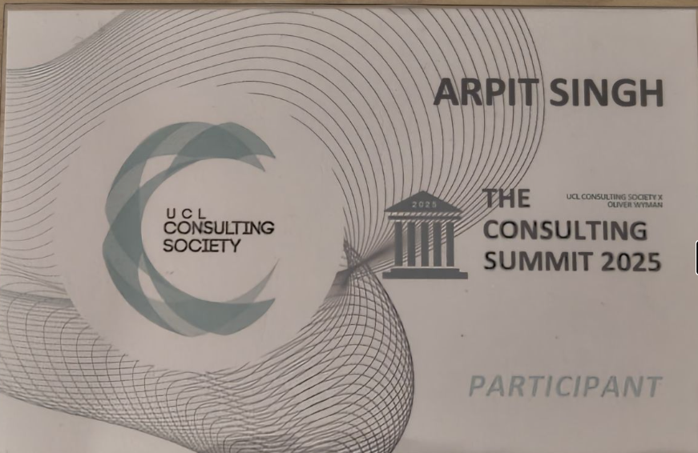
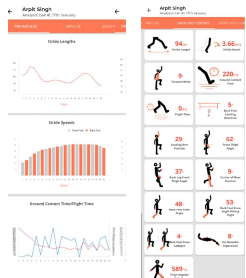
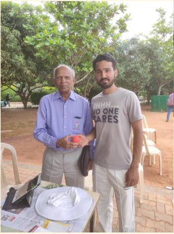

I'm an MSc Business Analytics graduate (Distinction) from the University of Surrey. Data, for me, has always been about one question: would better information have changed that decision? That question led me to wire up eye-tracking sensors and physiological monitors to 113 participants for my dissertation, testing whether better chart design changes how people interpret data. It does. And that has shaped how I approach every project since.
I currently work at HSBC UK within an FCA-regulated environment, analysing transaction patterns, investigating financial crime cases, and partnering with Risk and Fraud teams, while building independent analytics projects on churn prediction, revenue forecasting, and customer segmentation.
Before HSBC, I worked at Industry Pro where I built provider scoring models for 150+ service providers, improved data completeness from 64% to 91%, and cut reporting time from three days to same day. Those experiences taught me that the most valuable dashboards aren't the most complicated. They're the ones that help people make better decisions.
I work primarily in SQL, Python, and Power BI, with experience across machine learning, time-series forecasting, statistical modelling, and BI dashboarding. Most of my portfolio started as a question I wanted answered and turned into a project that combined those tools to find it.
Whether I am investigating financial crime, building forecasting models, or experimenting with synthetic data, the goal is always the same: turn messy data into clear decisions that people can act on.
Member of HSBC University's Data & AI Academy, continuously learning emerging analytics tools, AI technologies, and modern methodologies to stay aligned with the rapidly evolving data landscape.
01
Data Analysis & Diagnostics
SQL (Window Functions, CTEs)Python (Pandas, NumPy)Exploratory Data Analysis
02
BI & Visualisation
Power BIDAX & Power QueryExcel (Advanced)Dashboarding & KPI Tracking
I use a structured approach to analytics: understanding the business problem, preparing trustworthy data, uncovering meaningful insights, and recommending actions that drive better outcomes.
I seek to push the limits of creativity to create high-engaging, data-driven, and memorable analytical solutions.
Retail Sales Analytics & Forecasting
Business Intelligence / Forecasting

Road Traffic Accident Severity Prediction
Machine Learning
Impact of Statistical Visualisations on Decision-Making
Research / Behavioural Analytics

Financial Operations Analytics
Machine Learning / Forecasting
Retail Sales Analytics & Forecasting
Business IntelligenceForecastingSQLPythonPower BIProphetDAX
Problem
Diagnose sales performance and build reliable demand forecasting across four regional markets.
Approach
Executed end-to-end SQL diagnostics on 9,800+ retail transactions worth $2.26M across 4 regional markets, applying window functions and CTEs to identify a 32% sales collapse in the South region and low-AOV structural weaknesses in the Central market.
Built a three-page interactive Power BI dashboard with DAX measures, time intelligence modelling, and KPI tracking — enabling regional performance comparison and data-driven business recommendations.
Developed a Python Prophet forecasting model to automate demand planning.
Result
Reduced weekly forecast error (MAPE) from ~250% to ~11%, identifying a 32% sales collapse in the South region and enabling automated demand planning.
Predict accident severity and identify key drivers from UK road-traffic data.
Approach
Conducted end-to-end predictive analytics on 2,480 UK road traffic accident records across 35 variables using SAS for data preparation, visualisation, and modelling.
Applied SAS text analytics and topic modelling on 598 social media posts to generate insights on accident impact and public sentiment.
Result
83.47% accuracy, 0.9172 AUC, and 0.6688 KS statistic — identified location and speed limit as leading severity drivers.
Detailed report and supporting materials available upon request. Certain project artefacts are not publicly distributed due to academic copyright, confidentiality, intellectual property, and professional-use considerations.
Impact of Statistical Visualisations on Decision-Making
ResearchBehavioural AnalyticsRMATLABSQLiMotions
Problem
Measure how visualisation design affects decision accuracy and cognitive load.
Approach
Designed and executed a controlled behavioural analytics study across 113 participants using eye-tracking, pupil dilation analysis, and physiological sensors to measure how visualisation design affects decision accuracy and cognitive load.
Applied Wilcoxon testing and linear mixed-effects modelling in R across multimodal datasets combining response accuracy, fixation heatmaps, and biometric signals.
Result
Redesigned violin plots improved interpretation accuracy from 61% to 70% (p=0.014) and cut response times by 14 seconds compared with traditional histograms.
Detailed report and supporting materials available upon request. Certain project artefacts are not publicly distributed due to academic copyright, confidentiality, intellectual property, and professional-use considerations.
Build an end-to-end analytics solution on 5,000 banking customers and £28.5M revenue data to support churn reduction, revenue planning, and customer segmentation.
Approach
Built a churn prediction model across 5,000 customers identifying 652 at-risk customers, with recency and transaction frequency as dominant predictors and outputs translated into an executive dashboard.
Developed an ARIMA revenue forecasting model on 5 years of synthetic banking data aligned to FCA reporting conventions, projecting 12-month revenue at 0.73% MAPE and detecting Q4 seasonal peaks to support capacity and resource planning.
Delivered RFM segmentation across 8 customer groups and CLV analysis revealing a 14.33x CLV-to-CAC ratio and 5-month average customer payback period, informing targeted retention strategy across 4,344 active accounts.
Result
652 at-risk customers identified · 12-month revenue forecast at 0.73% MAPE · 14.33x CLV-to-CAC ratio — delivering actionable retention strategy and £1.6M annual revenue at risk quantified through RFM segmentation.
Detailed report and supporting materials available upon request. Certain project artefacts are not publicly distributed due to academic copyright, confidentiality, intellectual property, and professional-use considerations.
BEYOND THE DESK
Cases, stages & competitions
Representing the University of Surrey at the UK’s largest inter-university consulting competition — The Consulting Summit 2025, hosted by UCL Consulting Society in partnership with Oliver Wyman.
Our case: “Revitalising Santander Cycles — sustaining and expanding market share in London’s competitive bike-sharing market.” Competing against 25 teams from across the UK, we built a data-driven market growth strategy and presented structured recommendations to a panel of industry judges, with mentorship from BCG and McKinsey & Company.
25TEAMS ACROSS THE UK
1SURREY DELEGATION
BCG · McKinseyINDUSTRY MENTORS
Feb 2025UCL, LONDON

Presenting the comparative plan analysis to industry judges

Inter-university case competition · UCL

UCL Consulting Society × Oliver Wyman · Feb 2025

Personal performance dashboard built from StanceBeam biomechanics data
Cricket has been a constant throughout my life. Playing competitively for over a decade while balancing full-time work and postgraduate study taught me discipline, consistency, and how to perform under pressure.
Curious about what separated a good performance from a great one, I used StanceBeam's biomechanics technology to analyse data and built a personal performance dashboard to track trends and guide technical adjustments.
It was an early lesson that data changes outcomes in any field.

Over a decade of competitive cricket
My professional experience
Mar 2026 – Present
Universal Banker — WPB Data & Analytics
HSBC UK
Sept 2024 – Feb 2026
Data Consultant — Remote
Industry Pro
Sept 2024 – Sept 2025
MSc Business Analytics — Distinction
University of Surrey
Aug 2023 – Aug 2024
Junior Data Analyst
Industry Pro
WHAT OTHERS SAY
A word from those who know my work
AH
“It was a pleasure to supervise Arpit for his dissertation project. He was dedicated and professional, and was very keen to learn everything he could. Arpit is clearly a very passionate and able analyst and I would happily recommend him!”
Dr Andy Hill
Senior Lecturer in Business Analytics · Surrey Business School, University of Surrey
"Arpit joined us early when we were still building our data infrastructure and took ownership of tracking service operations from scratch. What stood out was that he asked the right business questions before building anything. He later moved into a consultant capacity and continued delivering useful work as we expanded into the US and took on larger enterprise accounts. Would recommend him to any team that wants someone who understands both the data and the context around it."
Rohit Sinwer
Founder · Industry Pro — Industrial Automation Solutions
Thanks for reaching out. I'll get back to you shortly.
Let's talk about your next Analyst hire
I'm actively looking for Business Analyst and Data Analyst opportunities where I can combine analytical skills with domain knowledge to drive measurable impact.